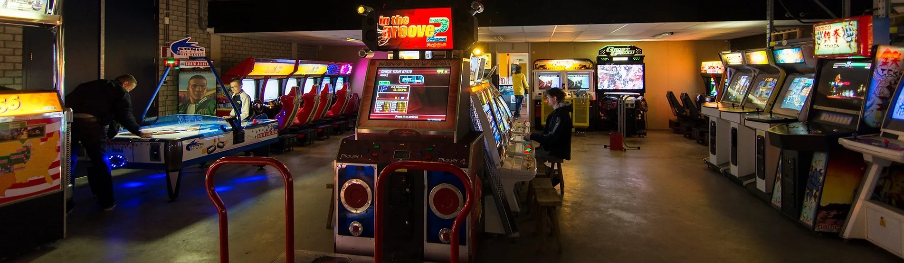

De Geschiedenis
Een garagebox in Den Haag is de plek waar het avontuur in 2008 begon, met twee vrienden Hasan Tasdemir en Pascal Rappailles. De garagebox werd al snel te klein waarna ze uitweken naar een loods op een industrieterrein. Helaas was de loods niet verwarmd en moest midden in de winter alles worden overgebracht naar een leegstaand Ministerie van Landbouw. Toen ook dit pand leeggeruimd moest worden, werd de toenmalige collectie van 10 arcade videogames met wat reserveonderdelen opgeslagen in een oude showroom voor klassieke auto’s. Omdat daar geen ruimte was om de kasten te renoveren of te bespelen werd uitgekeken naar passende ruimte. Die werd in 2011 gevonden aan de Cobaltstraat in Zoetermeer. Daar besloot Hasan om met 4 vrienden de locatie te huren en kon het avontuur groeien tot een eigen ontmoetingsplek om hun hobby uit te oefenen en lekker te ontspannen met een game.